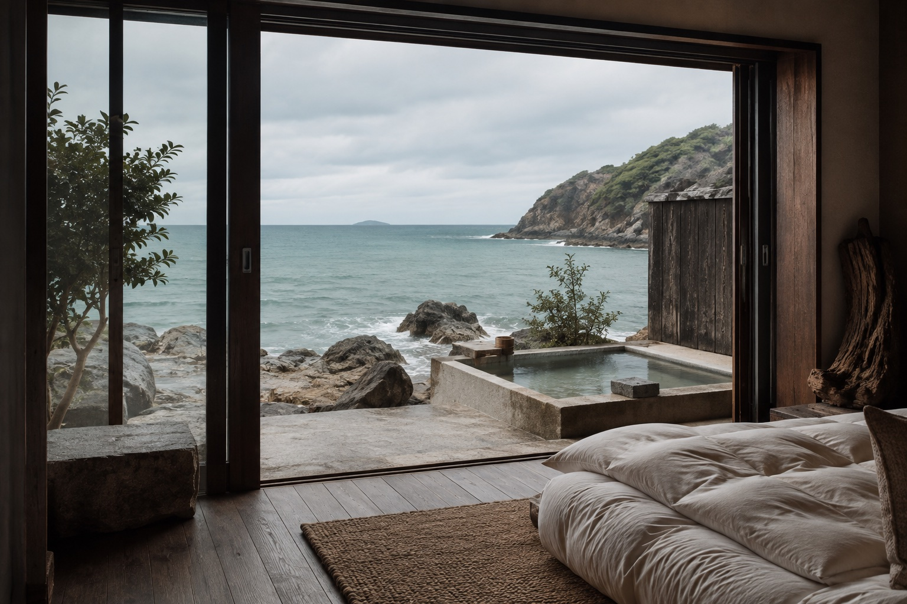

A pause by the sea
時計を置いて
海のリズムで過ごす
波の音で目を覚まし、窓辺でお茶を淹れる。
読みかけの本を開いて、気が向いたら海辺へ。
凪の間は、予定のない一日を楽しむ小さな宿です。
Rooms & quiet moments
窓の向こうの海を
ひとり占めする客室
Your private retreat
海に向かう客室
大きな窓の向こうに海が広がる、静かな客室。テラスの椅子で、波の音を聞きながらお過ごしください。
2名まで専用テラス
この滞在について相談する客室タイプは架空の設定です。写真は共通の空間イメージです。
Plan your quiet days
次の休みは
少しゆっくり
客室や滞在スタイルを選ぶ、宿泊相談フォームのサンプルです。